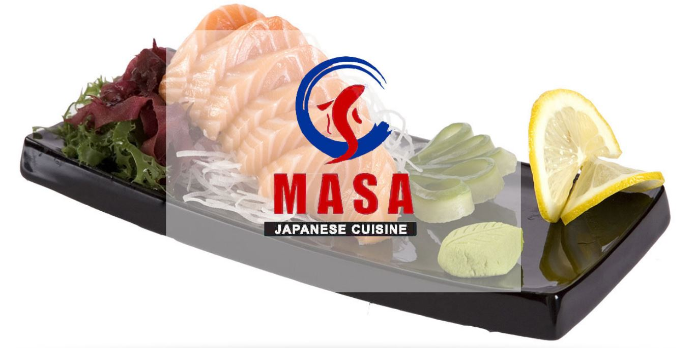

This website is for locals and visitors to see what Wausau has to offer for them. Wausau's List offers almost 270 businesses or parks as things to do and places to see!
This website is for locals and visitors to see what Wausau has to offer for them. Wausau's List offers almost 270 businesses or parks as things to do and places to see!
Join us on the facebook page with all forms of communication, comments, questions, concerns, errors, or if you are a business wanting to get in contact with the page. Facebook Page
Once you press "Search!", scroll down to see results.
Amount : $
MASA Japanese Cuisine | Sushi and Japanese Cuisine restaurant. | $ 13-25 cost per hour/ per person | Hours : Lunch (Mon - Thur) 11am - 3pm Dinner (Mon - Thur) 4:30pm - 10pm (Fri & Sat) 11am - 10:30pm (Sun) 11:30am - 9pm
Humane Society of Marathon County | Play with cats and dogs in need at no cost! | Link! | Hours : (Mon & Tues) 12pm - 5pm (Wed & Thurs) Closed (Fri & Sat) 12pm - 5pm (Sun) Closed
Sunny Vale Park | 300 acre park with swimming lake with many other activities. | Link! | Hours : (Everyday) 6am - 11pm
Wausau Mine Company | A recreated "Gold Mine Shaft" atmosphere for drinks and food. | $ 10-20 cost per hour | Link! Menu | Hours : (Mon - Fri) 11am - 10pm (Sat & Sun) 11am - 11pm
2510 Restaurant | Formal American restaurant with deli and carryout. | $ 15-20 cost per hour/ per person | Link! Menu | Hours : (Sun - Thur) 11am - 9pm (Fri & Sat) 11am - 10pm
Milwaukee Burger Company | Wisconsin-style bar that serves great food and brews. | $ 10-20 cost per hour/ per person | Link! Menu | Hours : (Sun - Thur) 11am - 10pm (Fri & Sat) 11am - 12am
Applebee's Grill & Bar | Casual atmosphere for American food and drinks. | $ 10-20 cost per hour/ per person | Link! Menu | Hours : (Sun - Thur) 11am - 12am (Fri & Sat) 11am - 1am
Jimmy Johns | Freaky fast sandwich shop. | $ 7-10 cost per hour/ per person | Link! Menu | Hours : (Everyday) 11am - 9pm
McDonald's | Everyone's favorite fast food franchise. | $ 1-15 cost per hour/ per person | Link! Menu | Hours : Inside (Everyday) 5am - 11pm Drive-Thru (Everyday) 5am - 12am
Subway | Fast sandwich shop franchise. | $ 5 -10 cost per hour/ per person | Link! Menu | Hours : (Mon - Fri) 7am - 10pm (Sat) 8am - 10pm (Sun) 8am - 9pm
Buffalo Wild Wings | Sports bar with wings and brew. | $ 10-25 cost per hour/ per person | Link! Menu | Hours : (Sun - Wed) 11am - 11pm (Thur - Sat) 11am - 12am
Day's Bowl-A-Dome | Bowling center with a restaurant and bar. | $ 7-15 cost per hour/ per person or $ 24-35 cost per hour/ per lane | Link! Menu | Hours : (Mon - Thur) 12pm - 8pm (Fri & Sat) 12pm - 12am (Sun) 12pm - 5pm
Noodles and Company | Pasta-focused restaurant. | $ 8-15 cost per hour/ per person | Link! Menu | Hours : (Sun - Wed) 11am - 9pm (Thur - Sat) 11am - 10pm
Brockmeyer Park | 25.5 acre park with three soccer fields, litle leage diamond, play equipment and a public restroom with flussing toilets. | Link! | Hours : (Everyday) 6am - 11pm
Vino Latte | A coffee, eatery, and wine shop. | $5 -10 cost per hour/ per person | Link! Menu | Hours : (Mon - Fri) 6am - 8pm (Sat) 7:30am - 4pm (Sun) 9am - 3pm
Arby's | Fast food chain that serves lunchmeat sandwiches with curly fries. | $7-10 cost per hour/ per person | Link! Menu | Hours : (Everyday) 6:30am - 10pm
Philly's Subs & Gyros | Sub shop with gyros that have a subway-style content selection process. | $6-10 cost per hour/ per person | Link! Menu | Hours : (Mon - Fri) 11am - 7pm (Sat) 11am - 3pm (Sun) Closed
Campus Pub | A sports bar with lots of summer activities and tournaments. Happy Hour is 2 - 6pm. | $15-40 cost per hour/ per person | Link! | Hours : (Sun) 12pm - 2am (Mon - Thur) 3pm - 2am (Fri - Sat) 12pm - 2:30am
Taco Bell | American mexican fast food chain. | $1 - 15 cost per hour/ per person | Link! Menu | Hours : (Sun-Thur) 7am - 1am (Fri-Sat) 7am - 3am
Cruisin 1724 | Bar with live music. | $15-40 cost per hour/ per person | Link! | Hours : (Sun) 12pm-2am (Mon-Thur) 3pm-2am (Fri) 3pm-2:30am (Sat) 12pm-2:30am
Sawadee Thai Restaurant | Thai cuisine restaurant. | $10-15 cost per hour/ per person | Link! Menu | Hours : (Sun-Thurs) 11am-8pm (Fri-Sat) 11am-9pm
Opa! Gyros | Gyros specialty with other American foods. | $4-9 cost per hour/ per person | Link! Menu | Hours : (Mon-Sat) 11am-8pm
Briq's Soft Serve | Ice cream and frozen treats at an outside location with a drive-thru. | $3 - 6 cost per hour/ per person | Link! Menu | Hours : (Sun-Thur) 10am-10pm (Fri & Sat) 10am-11pm
Monk Botanical Gardens | A public garden with aim to be one-of-a-kind built by the community. | Link! | Hours : (Everyday) Dawn - Dusk
Schofield Park | 5.2 acre park with a boat landing, picnic area, play equipment, and more. | Link! | Hours : (Everyday) 6am-11pm
Aftershock Bar | Local bar. | $15-40 cost per hour/ per person | Link! | Hours : (Sun) 12pm-9pm (Mon & Tues) 2pm-12am (Wed & Thurs) 2pm-1am (Fri) 2pm-2:30am (Sat) 12pm-2:30am
Schulenberg Park | 3.6 acre park with outdoor swimming pool and tennis court. | Link! | Hours : (Everyday) 1pm-7:45pm
A & W | American fast food chain known for its rootbeer and rootbeer floats. | $5-10 cost per hour/ per person | Link! Menu | Hours : (Mon - Sat) 10am-10pm (Sun) 11am-9pm
Blue Willow Cafe | American style restaurant | $5-20 cost per hour/ per person | Link! Menu | Hours : (Everyday) 6am-9pm
Culver's | American food chain with frozen custard treats. | $5-15 cost per hour/ per person | Link! Menu | Hours : (Everyday) 10am-10pm
Country Coin & Collectibles | A collectible coin shop. | Link! | Hours : (Mon - Thurs) 8am-3pm (Fri) 8am-12pm (Sat & Sun) Closed
Jemma's Cafe | Small American style restaurant with ice cream. | $8-20 cost per hour/ per person | Link! Menu | Hours : (Mon) 10:30am-3pm (Tues - Thurs) 10:30am-8pm (Fri & Sat) 10:30am-9pm (Sun) Closed
Bethesda Thrift Shop | Thrift and consignment Store. | Link! | Hours : (Mon & Thurs) 10am-6pm (Tues-Wed & Fri) 10am-5pm (Sat) 11am-4pm (Sun) Closed
Liberty Bell Coin Investments | Shop to buy and sell quality coins antiques and precious metals. | Link! | Hours : (Mon - Fri) 10am-5:30pm (Sat) 10:30am-1:30pm (Sun) Closed
101 Pub | Local pub. | $15-40 cost per hour/ per person | Link! | Hours : (Sun - Thurs) 8am-2am (Fri & Sat) 8am-2:30am
The Glass Station | Tobacco pipe head shop. | Link! | Hours : (Sun) 11am-5pm (Mon - Fri) 9am-8pm (Sat) 10am-8pm
Sam's Pizza of Wausau | Pizza parlor with games for kids and beer for adults. | $10-20 cost per hour/ per person |Link! Menu | Hours : (Sun - Thurs) 3pm-10pm (Fri) 3pm-11pm (Sat) 11am-11pm
Eastbay | Athletic wear store. | Link! | Hours : (Sun) 11am-5pm (Mon - Fri) 10am-8pm (Sat) 9am-5pm
Mandarine Chinese Restaurant | Local Chinese cuisine restaurant. | $7-12 cost per hour/ per person | Link! Menu | Hours : (Mon - Fri) 11am-2:30 & 4pm-9pm (Sat) 11am-9pm (Sun) Closed
October Guitar | Local guitar shop. | Link! | Hours : (Tues - Fri) 10:30am-6pm (Sat) 10:30am-3:30pm (Sun - Mon) Closed
Quilting Workshop | Arts and crafts store. | Link! | Hours : (Mon - Fri) 10am-5:30pm (Sat) 10am-4pm (Sun) Closed
Lavender & Lace Antiques | Antique store. | Link! | Hours : (Tues - Fri) 11am-5pm (Sat) 10am-3pm (Sun - Mon) Closed
Domino's Pizza | Pizza delivery chain. | $7-15 cost per hour/ per person | Link! Menu | Hours : (Sun - Thur) 10:30am-12am (Fri - Sat) 10:30-2am
KFC | Fast food chain that specializes in chicken. | $5-20 cost per hour/ per person | Link! Menu | Hours : (Sun) 11am-9pm (Mon - Sat) 11am-10pm
River District Antique Mall | Local antique shop. | Link! | Hours : (Tues - Sat) 10am-4pm (Sun - Mon) Closed
Dime & Dollar Thrift Store | Local thrift shop. | Link! | Hours : (Mon) 10am-7pm (Tues - Sat) 10am-4pm
Reservoir Park | Park with an open shelter, playground equipment, and open play area. | Link! | Hours : (Everyday) 6am-11pm
Starbucks | Well-known coffee chain. | $5-15 cost per hour/ per person | Link! Menu | Hours : (Sun - Thurs) 5:30am-9pm (Fri & Sat) 5:30am-10pm
King Buffet | Chinese buffet. | $5-15 cost per hour/ per person | Link! Menu | Hours : (Everyday) 11am-9pm
Royal Nails & Spa | Local nail salon. | $5-50 cost per hour/ per person | Link! | Hours : (Sun) 10am-5pm (Mon - Fri) 9am-7pm (Sat) 9am-9pm
La Taqueria | Mexican street food restaurant. | $3-15 cost per hour/ per person | Link! Menu | Hours : (Sun) 10:30pm-8pm (Mon) Closed (Tues - Thurs) 11am-9pm (Fri & Sat) 11am-10pm
Great Dane | Local pub and eatery. | $25-50 cost per hour/ per person | Link! Menu | Hours : (Sun - Thurs) 11am-12am (Fri & Sat) 11am-2:30am
Treu's Tic Toc Club | Local bar with food. | $7-25 cost per hour/ per person | Link! Menu | Hours : (Everyday) 11am-2am
Marathon Park | Large park with ballfields, skating rinks, a kids' train ride, and fair grounds. | Link! | Hours : (Everyday) 6am-11pm
The Red Apple Family Restaurant | Local family restaurant. | $5-20 cost per hour/ per person | Link! Menu | Hours : (Sun - Thurs) 6am-8pm (Fri & Sat) 6am-10pm
Rice's Antiques & Architechtural Salvage | Local antique shop. | Link! | Hours : (Sun & Mon) 9am-5pm (Tues - Thurs) Closed (Fri) 10am-5pm (Sat) 9am-5pm
Riverside Park | Enclosed shelter, blacktop bike trail, vollyball court, and more. | Link! | Hours : (Everyday) 6am-11pm
Hmong Eggroll | Local Hmong restaurant. | $5-10 cost per hour/ per person | Link! Menu | Hours : (Wed - Mon) 10:30am-7pm (Tues) Closed
Baseman Shoes | Local outdoor attire shop. | Link! | Hours : (Mon - Fri) 9am-5pm (Sat) 9am-12pm (Sun) Closed
Cheers Bar | Local Bar. | $15-40 cost per hour/ per person | Link! | Hours : (Everyday) 10am-2am
Lil Devil's Glass | Tobacco pipe head shop. | Link! | Hours : (Sun) 9am-9pm (Mon - Sat) 9am-10pm
St. Vincent de Paul of Wausau | Local thrift shop. | Link! | Hours : (Mon) 9am-8pm (Tues - Fri) 9am-5pm (Sat) 9am-4pm (Sun) Closed
Dairy Queen Store | Fast food chain that serves food and treats. | $5-10 cost per hour/ per person | Link! Menu | Hours : (Sun) 12pm-9pm (Mon - Sat) 11am-9pm
Central Wisconsin Water Walkers | Local water ski show. | Link! 2018 Schedule
DC Everest Country Park | 12 acre park with boat access to Lake Wausau, fishing pier, drinking water, and more.| Link! | Hours : (Everyday) 6am-11pm
Three "M" Park | Two playground areas, tennis court, soccer field, pickleball court, and more. | Link! | Hours : (Everyday) 6am-11pm
Lumpy's | Local bar. | $15-45 cost per hour/ per person | Link! | Hours : (Everyday) 11am-2:30am
BB Jack's Pizza and Sandwich Lounge | Local lounge where you can eat food. | $10-20 cost per hour/ per person | Link! Menu | Hours : (Sun) 9am-10pm (Mon - Sat) 11am-11pm
Sylvan Hill Park | Local park with sledding hill in winter. | Link! | Hours : (Everyday) 6am-11pm
Lucky's Eastside Pub | Local pub. | $15-40 cost per hour/ per person | Link! | Hours : (Sun - Thurs) 7am-2am (Fri & Sat) 7am-2:30am
Gilbert Park | Park with boat landing, handicap accessible fishing pier, picnic tables, and grills.| Link! | Hours : (Everyday) 6am-11pm
River Edge Walkway | Walkway on the river. | Link! | Hours : (Everyday) 6am-11pm
Wausau Music Center | Local music store. | Link! | Hours : (Mon - Thurs) 10am-6pm (Fri) 10am-5pm (Sat & Sun) Closed
Divepoint Scuba Paddle & Adventure Center | Rental outdoor equipment. | $20-100 cost per hour/ per person | Link! | Hours : (Sun) 10am-3pm (Mon - Thurs) 10am-6pm (Fri) 9am-7pm (Sat) 9am-3pm
Thrive Foodery | Local restaurant and serves brews. | $7-20 cost per hour/ per person | Link! Menu | Hours : (Mon - Sat) 11am-10pm (Sun) Closed
Kaiser Pool | Outdoor pool. | $2-4 cost per hour/ per person | Link! | Hours : (Mon & Tues) 1pm-7:50pm (Wed) 1pm-8pm (Thurs - Sun) 1pm-7:50pm
Bob & Randy's Bar | Local bar with food. | $10-50 cost per hour/ per person | Link! Menu | Hours : (Sun - Thurs) 7am-2am (Fri & Sat) 7am-2:30am
Sixth Street Filling Station | Local restaurant. | $10-20 cost per hour/ per person | Link! Menu | Hours : (Mon) Closed (Tues - Sun) 6:30am-2pm
Loppnow's Bar | Local bar. | $15-40 cost per hour/ per person | Link! | Hours : (Everyday) 12pm-2:30am
Subway | Fast food sandwich shop. | $5-10 cost per hour/ per person | Link! Menu | Hours : (Mon - Fri) 7am-10pm (Sat & Sun) 8am-9pm
Wausau on Water | Family entertainment center with full restaurant, bar and more. | $20-50 cost per hour/ per person | Link! Menu | Hours : (Sun - Thurs) 11am-10pm (Fri & Sat) 11am-12am
Black Purl | Knitting store. | Link! | Hours : (Tues - Fri) 10am-5pm (Sat) 10am-3pm (Sun & Mon) Closed
The Glass Hat | Pub with an artistic twist. | $15-40 cost per hour/ per person | Link! | Hours : (Tues - Thurs) 5pm-2am (Fri & Sat) 5pm-2:30 (Sun - Mon) Closed
Angelo's Family Pizzeria | Local pizzeria. | $10-30 cost per hour/ per person | Link! Menu | Hours : (Sun & Mon) 4pm-10pm (Tues - Thurs) 4pm-11pm (Fri) 4pm-12am (Sat) 4pm-11pm
Hope Thrift Store | Wide variety of items where the proceeds goes to their 20 bed home. | Link! | Hours : (Mon - Sat) 10am-6pm (Sun) Closed
Marathon County Historical Society | Local museum. | Link! | Hours : (Tues - Fri) 9am-4:30pm (Sat & Sun) 1pm-4:30pm (Mon) Closed
Yawkey House Museum | Local museum. | Link! | Hours : (Tues - Fri) 9am-4:30pm (Sat & Sun) 1pm-4:30pm
Barker-Stewart Island Park | 15 acres with walking trails and historical interpretive signs. | Link! | Hours : (Everyday) 6am-11pm
Big Bull Falls Park | 2.5 acres with open shelter and view of Wisconsin River. | Link! | Hours : (Everyday) 6am-11pm
Evolution In Design | Local art store with a neat, two-story home layout. | Link! | Hours : (Mon - Fri) 8am-6pm (Sat) 9am-3pm (Sun) Closed
Nicole's Boutique | Local fashion shop. | Link! | Hours : (Mon - Wed) 10am-6pm (Thur & Fri) 10am-7pm (Sat) 10am-6pm (Sun) Closed
Back When Cafe | Local cafe. | $10-30 cost per hour/ per person | Link! Menu | Hours : (Tues - Sat) 5pm-10pm (Sun & Mon) Closed
Sweets on 3rd | Local coffee and sweets bar. | $2-7 cost per hour/ per person | Link! Menu | Hours : (Sun) 9am-5pm (Mon - Sat) 9am-7pm
La Prima | Local Italian restaurant. | $5-15 cost per hour/ per person | Link! Menu | Hours : (Mon - Fri) 7am-6pm (Sat) 8am-4pm (Sun) Closed
Wausau Museum of Contemporary Art | Local art museum. | Link! | Hours : (Tues - Sat) 12pm-5pm (Sun & Mon) Closed
Janke Book Store | Local book store. Also Wisconsin's oldest book store.| Link! | Hours : (Mon - Fri) 9am-6pm (Sat) 9am-5pm (Sun) Closed
Shepherd & Schaller Sporting | Local outdoor shop. | Link! | Hours : (Mon - Wed) 9am-6pm (Thurs & Fri) 9am-8pm (Sat) 9am-5pm (Sun) Closed
Leigh Yawkey Woodson Art Museum | Local art museum. | Link! | Hours : (Tues - Fri) 9am-4pm (Sat & Sun) 12pm-5pm (Mon) Closed
The Grand Theater | Local theater. | Link! | Hours : Check showings
Erbert and Gerbert's | Local sandwich shop. | $5-10 cost per hour/ per person | Link! | Hours : (Sun) 11am-10pm (Mon - Thurs) 10:30am-10pm (Fri & Sat) 10:30am-2:30am
Intermission | Local bar. | $15-40 cost per hour/ per person | Link! | Hours : (Mon - Thurs) 2pm-close (Fri)11am-close (Sat) 10am-close (Sun) Noon-close
Poppy's Boutique | Women clothing store. | Link! | Hours : (Wed - Fri) 12pm-6pm (Sat) 11am-4pm (Sun & Mon) Closed
Polito's Pizza | Specialty pizza-slice shop. | $3-7 cost per hour/ per person | Link! Menu | Hours : (Mon - Thurs) 11am-10pm (Fri) 11am-11pm (Sat) 11am-10pm (Sun) 11am-8pm
Daly's | Local restaurant with wine. | $8-25 cost per hour/ per person | Link! Menu | Hours : (Mon - Thurs) 11am-10pm (Fri & Sat) 3pm-12am (Sun) Closed
Jalapenos Mexican Restaurante & Bar | Local mexican restaurant. | $7-15 cost per hour/ per person | Link! Menu | Hours : (Mon - Thurs) 11am-9pm (Fri & Sat) 11am-2am (Sun) Closed
Isaac's Fine Appearel Inc. | Clothing store. | Link! | Hours : (Mon - Fri) 10am-5:30pm (Sat) 10am-4pm (Sun) Closed
City Grill | Local downtown restaurant without a formal wear atmosphere. | $8-20cost per hour/ per person | Link! Menu | Hours : (Mon - Thurs) 11am-10pm (Fri & Sat) 11am-11pm (Sun) Closed
Malarkey's Pub & Townies Grill | Local Irish pub and American Eatery. | $15-40 cost per hour/ per person | Link! Menu | Hours : (Sun) 10am-3pm (Mon) Closed (Tues - Sat) 11am-9pm
Central Board Shop | Local skateboard and snowboard shop. | Link! | Hours : (Sun) 12pm-5pm (Mon - Fri) 11am-8pm (Sat) 11am-6pm
Antiques By Ginny | Local antique shop. | Link! | Hours : (Tues - Fri) 11:30am-4:30pm (Sat) 10am-3pm (Sun & Mon) Closed
The Local | Local artisan shop. | Link! | Hours : (Sun) 11am-3pm (Mon) Closed (Tues - Sat) 10am-5:30pm
The Mint Cafe | Local restaurant. | $6-15 cost per hour/ per person | Link! Menu | Hours : (Mon - Fri) 6:30am-8pm (Sat) 7am-3pm (Sun) Closed
Inner Sleeve Records | Local record store. | Link! | Hours : (Mon - Fri) 12pm-7pm (Sat) 12pm-5pm (Sun) Closed
Limericks Public House | Local Irish pub. | $15-40 cost per hour/ per person | Link! Menu | Hours : (Tues - Thurs) 4pm-11:30pm (Fri & Sat) 4pm-2:30am (Sun & Mon) Closed
Chang Garden Wausau | Local Chinese and Japanse restaurant. | $6-20 cost per hour/ per person | Link! Menu | Hours : (Tues - Thurs) 11am-8:30pm (Fri & Sat) 11am-9:30pm (Sun) 11am-8:30pm (Mon) Closed
Marathon County Public Library | County library. | Link! | Hours : (Mon - Thurs) 9am-8:30pm (Fri & Sat) 9am-5pm (Sun) 1pm-5pm
Wausau Center/Mall | Town mall. | Link! | Hours : (Sun) 11am-6pm (Mon - Sat) 10am-8pm
Red Eye Brewing Company | Local brewpub. | $15-40 cost per hour/ per person | Link! | Hours : (Mon - Sat) 11am-9pm (Sun) Closed
Patina Coffeehouse | Local coffee shop. | $2-7 cost per hour/ per person | Link! | Hours : (Sun) 8am-3pm (Mon -Fri) 7am-5pm
Oak Island Park | Park with baseball diamond, skatepark, picnic/bbq shelters, and more! | Link! | Hours : (Everyday) 6am-11pm
Isle of Ferns Park | Park on an island with trails and field. | Link! | Hours : (Everyday) 6am-11pm
Pleasant View Park | Park with enclosed shelter, playground, tennis court, and lit sledding hill in winter. | Link! | Hours : (Everyday) 6am-11pm
Memorial Pool | Outside pool. | $1-3 cost per day/ per person | Link! | Hours : (Everyday) 1pm-7:30pm
Memorial Park | 23.4 acres with tennis courts, paved paths, outdoor pool, play equipment, and more. | Link! | Hours : (Everyday) 8am-11pm
Alexander Park | Park with drinking fountain, basketball hoop, play equipment, and more. | Link! | Hours : (Everyday) 6am-11pm
Airport Park | Park with soccer field and little league baseball diamond. | Link! | Hours : (Everyday) 6am-11pm
Grand Valley Adventures | Local outdoor paintball courses. | $40-70 cost per hour/ per person | Link! | Hours : [Summer] (Mon & Tues) By appointment only (Wed - Fri) 12pm-Close (Sat) 10am-Close (Sun) 12pm-6pm [Spring & Fall] Call for hours
Eastbay Sports Complex | Local soccer field complex. | Link! | Hours : (Everyday) 6am-11pm
Jenny's Family Restaurant | Local family restaurant. | $5-15 cost per hour/ per person | Link! Menu | Hours : (Everyday) 6am-8pm
Fat Joe's Pizzeria | Local "New York Style" pizzeria. | $15-30 cost per hour/ per person | Link! Menu | Hours : (Sun - Thurs) 4pm-9pm (Fri & Sat) 4pm-9pm
Dairy Queen (treats only) | Fast treats shop. | $5-10 cost per hour/ per person | Link! Menu | Hours : (Everyday) 10am-9pm
Pro Player | Sports bar and grill. | $20-45 cost per hour/ per person | Link! Menu | Hours : (Sun - Mon) 11am-2am (Fri & Sat) 11am-2:30am
Perkin's | Casual American-style restaurant chain that serves breakfast throughout the day. | $7-13 cost per hour/ per person | Link! Menu | Hours : 24 Hours
Johnny Cee Cards | Card & board game store. | Link! | Hours : (Sat - Thurs) 12pm-8pm (Fri) 12pm-10pm
The Office Bar | Local bar. | $15-40 cost per hour/ per person | Link! | Hours : (Sun) 9am-2am (Mon) 11am-2am (Tues - Thurs) 7am-2am (Fri) 6am-2:30am (Sat) 9am-2:30am
Taco Bell | American mexican fast food chain. | $1-10 cost per hour/ per person | Link! Menu | Hours : (Sun - Thurs) 7am-1am (Fri & Sat) 7am-3am
Hot Wok Chinese Express | Local Chinese cuisine with dine in or take out. | $4-11 cost per hour/ per person | Link! Menu | Hours : (Sun - Thurs) 11am-9pm (Fri & Sat) 11am-9:30pm
Arby's | Fast Food chain with hot lunch meat sandwiches. | $7-15 cost per hour/ per person | Link! Menu | Hours : (Everyday) 6:30am-10:00pm
Sconni's Alehouse & Eatery | Local pub with the best from Wisconsin. | $15-40 cost per hour/ per person | Link! Menu | Hours : (Sun) 11am-8pm (Mon - Sat) 11am-12am
Pawn America | Pawn shop. | Link! | Hours : (Mon-Fri) 10am-7pm (Sat) 10am-6pm (Sun) 12pm-6pm
50-50 Factory Outlet | Party Store. | Link! | Hours : (Sun) 10am-5pm (Mon-Fri) 9am-9pm (Sat) 9am-8pm
Log Cabin | Sitdown family restaurant. | $7-13 cost per hour/ per person | Link! Menu | Hours : (Sun & Mon) 5am-9pm (Tues - Sat) 5am-10pm
19th Hole Tavern | Local bar. | $15-40 cost per hour/ per person | Link! | Hours : (Sun) 8am-2am (Mon-Sat) 7am-2am
Mayoral Park | Playground equipment with access to Lake Wausau. | Link! | Hours : (Everyday) 6am-11pm
Krueger Floral and Gifts | Pick up someone you love some flowers or a gift. | Link! | Hours : (Mon - Fri) 8am-5:30pm (Sat) 8am-2pm